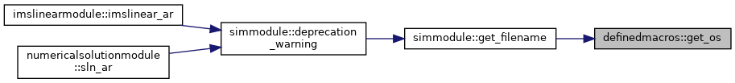

|
MODFLOW 6
version6.2.2
MODFLOW6CodeDocumentation
|
|
MODFLOW 6
version6.2.2
MODFLOW6CodeDocumentation
|
Functions/Subroutines | |
| integer(i4b) function, public | get_os () |
| Get operating system. More... | |
| integer(i4b) function, public definedmacros::get_os |
Function to get the integer operating system enum value.
Definition at line 17 of file defmacro.f90.

 1.8.17
1.8.17